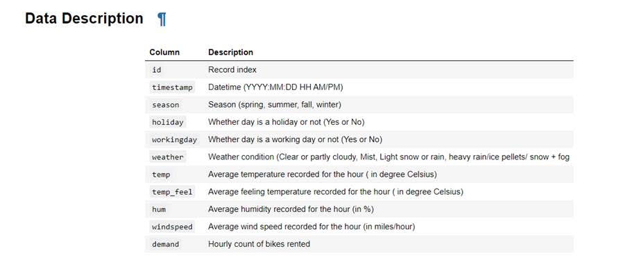
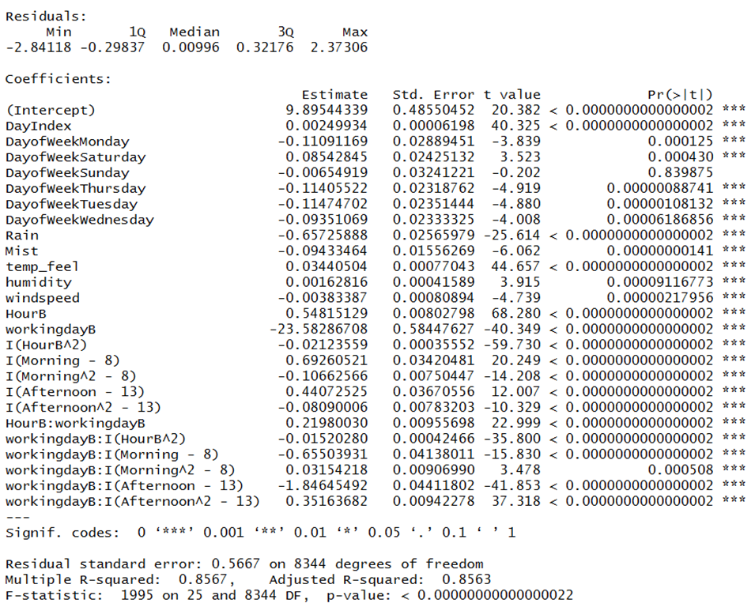
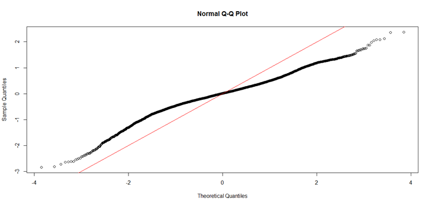
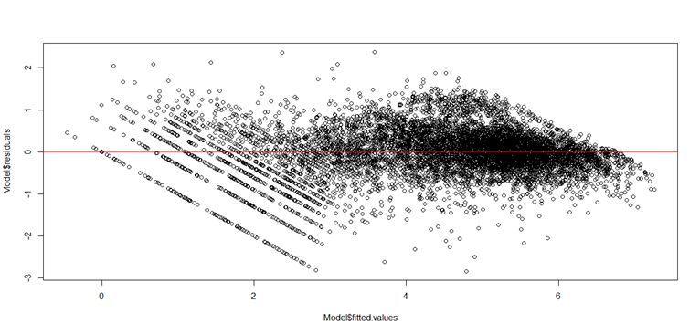
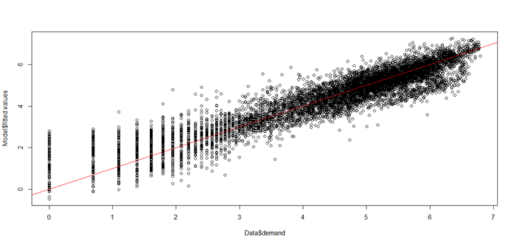
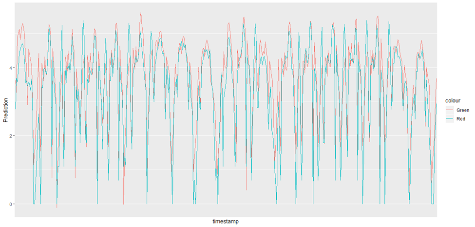
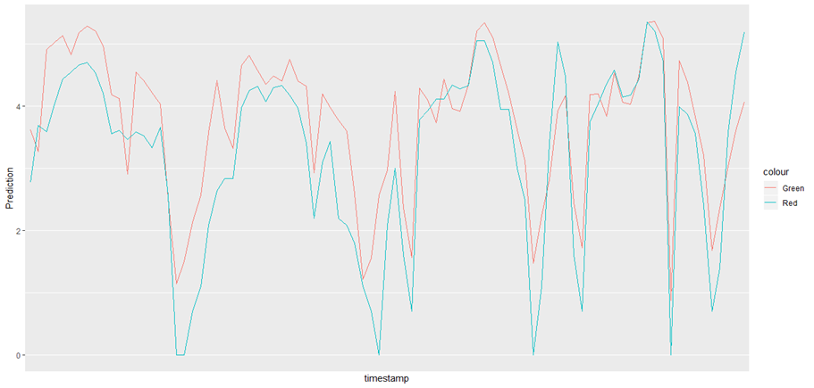
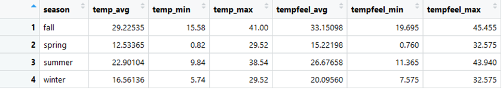
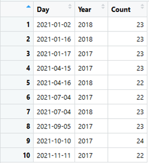

Rental bikes demanded (red) versus predicted demand (green) for both 2017 (lower line) and 2018 (upper line) aggregated by day
1. Executive Summary
This project develops a predictive model to forecast hourly demand for rental bikes. It uses a practice dataset that includes historical usage patterns, weather conditions and temporal variables. This example shows how machine learning can be used to forecast customer demand. By accurately predicting hourly demand, businesses can deploy staff, resources, and inventory precisely where they create the most value to increase revenue, reduce costs and improve customers' experience. The analysis begins with a detailed exploration of each variable, identifying issues with several fields and determines which features meaningfully contribute to predicting demand. Exploratory analysis reveals strong daily, weekly, and seasonal cycles in demand, as well as a clear upward trend. Investigating the daily averages of temperature, humidity and wind speed reveals misleading correlations caused by the strong effect time of day has on both demand and weather. For example, wind speed first appeared to show a positive correlation with demand (.119) but once I aggregated windspeed by day it showed a negative correlation (-.248). I found demand follows a nonlinear pattern across the day, with distinct shapes on work days versus non work days which impacted my modeling strategy. I found that work days show a midday “crater” in demand, while non work days follow a smoother parabolic curve. Using these insights, I create a nonlinear time‑series regression model incorporating spline‑like structures for different time‑of‑day segments, interactions with the workingday variable, and a trend variable capturing increasing demand over time. The final model achieved strong performance, with an R‑squared of 85.7% and an RMSE of 0.566, which indicates the model successfully captures most of the variability in hourly demand. Diagnostic checks including QQ‑plots, residual‑versus‑fitted plots, and comparisons of predicted versus actual demand show that the model captures the key patterns in the data and is statistically valid. The resulting model effectively provides a strong foundation for operational forecasting, resource allocation, and strategic planning in a real‑world bike‑share system.
2. Business Problem
Bike‑share systems face highly variable demand that changes by hour, day, weather conditions, and season. Without accurate forecasts, operators struggle with empty stations, overfilled stations, inefficient rebalancing routes, and unnecessary labor costs. These issues directly affect customer satisfaction and operational profitability. This project addresses the core need of predicting hourly rental demand to better align staffing, rebalancing operations, and inventory allocation with real‑time customer behavior. Although this analysis uses a practice dataset, the underlying problem mirrors the challenges faced by real operators, where understanding short‑term demand patterns is essential for delivering reliable service and controlling operational costs. Accurate hourly demand forecasting is the foundation of nearly every operational decision in a bike‑share system. These predictions feed into downstream models that determine when and where bikes will run out, when stations will overflow, and how many bikes need to be moved to maintain service reliability. Rebalancing algorithms and driver‑routing systems rely on demand forecasts like this to plan efficient pickup and drop‑off routes, schedule staff, and minimize costly last‑minute adjustments. By anticipating demand patterns in advance, operators can reduce shortages, avoid overcrowded stations, and deploy resources more effectively
3. Data Summary

4. Data Exploration
My first step was to examine each variable individually. After examining each variable I used that information to construct a model describing their effect on bike demand, the dependent variable.
A. Time Variables
I started with the timestamp variable and found it to describe the date and hour for each observation. I built a table with unique values and their number of occurrences to confirm there weren’t any duplicate values present in the data. I then created three new variables from the timestamp variable called Day, Hour and Year. This allowed me to build tables showing which days and hours were present in the data and which were missing. These variables were also very useful when creating charts to summarize the data. I found the data included most of the days and hours of the time period covered by the dataset but key dates were missing such as the Christmas holiday.
B. Season, Holiday and WorkingDay Variables
I next investigated the season variable included in the data. I found the dates were not typical of what I associate with the season. In order to investigate further I built a table showing the min, max and average temp and temp_feel for each season. Since winter was not the coldest season and summer was not the warmest I concluded the season variable would need to be changed in order to be useful. I ended up discarding the variable and using only the temp_feel variable to account for seasonality. I decided the actual temperature for a given day is likely to be more important than what season it belonged to. I next built a table to identify which days were marked as holidays by the holiday variable. I found a number of problems with the holiday variable. I found different holidays were recognized for 2017 as compared to 2018. I also found some of the dates did not appear to mark the correct day for important holidays while others occurred on the weekend rather than the day the holiday was observed. As a result I concluded the holiday variable wasn’t going to be very helpful. I considered the possibility of using an outside data source to correct the holiday variable or the possibility that it represents holidays used by the location that rents the bikes. At one point I added it to my model as a dummy variable but it was not statistically significant so I dropped the variable. I investigated the working day variable next. I built a table showing the number of days identified as a working day broken out by the day of the week and whether or not the day was flagged as a holiday by the holiday variable. I used the R package lubridate in order to create another column identifying during which day of the week each observation occurred. Except for Monday, I found all weekdays were not identified as a working day when flagged as a holiday but were considered to be a working days when not a holiday. Saturday was sometimes a working day even when flagged as a holiday. Sunday was never a working day and no holidays took place on Sunday. Given the variable did not label all weekdays as working days except when flagged as a holiday, I wasn’t confident in the accuracy of the variable. I later found the working day variable to be the key to explaining the behavior shown by days of the week explained below.
C. Weather Variables
I then investigated the temp and the temp_feel variables. I first plotted both variables against demand, but I did not find the plots to be very useful since time of day affects the temperature of a given hour. As a result I calculated the average temp and temp_feel for each day and then plotted them against demand. This revealed an obvious linear relationship between the temperature and the demand for bike rentals: the higher the temperature the greater the demand for bikes. I chose to use the temp_feel variable in my model since it had less missing values which meant I did not have to remove as many observations from the dataset. I chose to remove observations missing values since they made up a small share of the dataset. Temp_feel also had a slightly higher correlation with demand. I found humidity and windspeed have the same problem since they vary greatly by time of day. When plotted against the hour of the day, I found humidity to form an S-shaped curve. Average humidity was greatest at 5:00 AM and lowest at 3:00 PM. Windspeed shared a similar relationship with the time of day. Humidity appeared to be negatively correlated with demand (-.33) but most of the correlation disappeared once I aggregated humidity (it decreased to -.07 correlation). Windspeed first appeared to show a positive correlation with demand (.119) but once I aggregated windspeed by day it showed a negative correlation (-.248). I concluded it shares a negative correlation with demand. It only appeared to have a positive correlation since it is correlated with the time of day, a form of omitted variable bias.
D. Demand
After examining each of the independent variables, I then investigated demand, the dependent variable. I first plotted average demand for each day across the full time period covered by the dataset. This revealed a clear cyclical pattern where demand would increase during the spring as temperatures rise until it reaches a peak at the start of July. It would then decrease until it reaches its' lowest value in January. It also became obvious there is a positive trend such that, holding everything else constant, demand increases over time. What made this obvious is that 2018 shows similar cyclical patterns as 2017 but demand was greater on average in 2018 than in 2017. There also appeared to be a weekly cyclical as average daily demand rose and fell in repeating patterns within seasons. I then plotted average demand across each day of the week from Monday through Sunday. To my surprise there appeared to be a different pattern in 2017 as compared to 2018. Thursday appeared to have the lowest average demand in 2017 while Monday had the lowest average demand for 2018. Both years showed higher demand on Saturday and Sunday which was not a surprise. 2018 showed greater demand than 2017, once again suggesting a positive trend for demand. I tried making changes to the graphs such as removing outliers and changing the dates covered but this did not solve the problem. I did not identify the cause of this difference until I broke out average demand by the workingday variable instead of the day of week. I next plotted average demand versus hour of the day. This showed a parabolic shape (upside-down U) with a dip during lunch time. This made it obvious to me that the equation would need to model a quadratic relationship between time of day and demand. I made a key insight when I broke out demand by the day of the week and created separate graphs for 2017 and 2018. I found most weekdays had a strictly parabolic shape (upside-down U) while for some days demand cratered between 10 AM and 3 PM, resulting in there being a parabolic shape in the other direction (right-side up U) between 8 AM and 5 PM. Breaking the results out by the workingday variable showed days that were labeled a work day showed a crater around lunch time while other days showed a parabolic shape. These insights greatly informed my time series model I used to describe the data.
5. Model Creation
From my data exploration, I knew it was most important to accurately account for the relationship between time of day and demand. This was important since it was also correlated with several other variables. There is also great variation in demand based on the time of day. I knew the model needed to be nonlinear since there was a parabolic relationship between demand and time of day. I also knew there was a different relationship between the time of day and demand based on whether or not it was a workday. Finally, I needed to account for a positive trend for demand over time. The other variables, temp_feel, humidity and windspeed showed a linear relationship with demand. As a result I decided to create a series of splines to describe the relationship between time of day and demand. If it was not a workday the model would simply be a parabola with a peak around lunchtime. In the case of workdays there would be a curve showing rising demand from 4 AM to 8 AM. There would be another curve in the shape of a parabola (upside-down U) from 8 AM to 12 PM. There would be a similar curve showing an increase in demand from 1 PM to 5 PM. Finally the model would return to the original parabola shape from 6 PM to 4 AM. This required that I create a new hour variable. Instead of 0 corresponding to 12:00 AM and 23 to 11:00 PM, 0 would correspond to 4 AM and 23 would represent 3 AM. I also needed to create a categorical variable indicating whether it was morning (8 AM to 12 PM) or afternoon (1 PM to 5 PM). Both these variables being zero would indicate the default time period of 6 PM to 7 AM. I knew I needed to use the workday variable as a categorical variable. Finally I created a variable counting the number of days since the start of the dataset to account for demand’s positive trend. As a result I developed the following nonlinear time series model:
DayIndex: counts the number of days since January 1st 2017
DayofWeek: Categorical variable for each day of the week
Rain: Categorical variable indicating whether it rained (1 or 0)
Mist: Categorical variable indicating whether there was mist (1 or 0)
temp_feel: Continuous variable indicating what the temperature felt like
humidity: Continuous variable measuring humidity
windspeed: Continuous variable measuring windspeed
HourB: Integer value ranging from 0 (4 AM) to 23 (3 AM)
workingdayB: Categorical variable indicating whether or not it was a work day (1 or 0)
Morning: Categorical variable ranging from 1 (8 AM) to 5 (12 PM)
Afternoon: Categorical variable ranging from 1 (1 PM) to 5 (5 PM)

6. Model Diagnostics
Given my exploratory analysis and the output from my model I am confident I captured the key relationships between the independent variables and the dependent variables. This is shown by the high R-squared value of 0.8567, indicating the model captures most of the variability in the dependent variable. I calculated an RMSE of 0.566, which may be more meaningful for a nonlinear model. The strength of the model is supported by the low p-value generated by the F-test (testing whether the model is a better predictor of the dependent variable than no model at all) and the fact that all of the variables are statistically significant except for the categorical variable indicating whether it is a Sunday. To confirm that my model fits the data I generated a QQ-Plot, plotted fitted values against residuals and plotted the demand variable against the predicted values. The QQ-Plot suggested the residuals may not be normally distributed, but this is typical for a nonlinear model. The second chart shows the distribution of residuals follows the distribution of fitted values. The next chart shows the distribution of fitted values follows the demand variable. These both suggest the model fits the data. I created another chart showing average demand and the average predicted value by day across the full time period and another version covering the first month of the dataset. Finally I produced a chart showing demand and predicted demand by hour for the first four weeks of the dataset. The green lines show the model predictions while the red lines show the actual demand. These charts show that the model fits the data.







7. Results and Business Interpretation
The final model achieved strong predictive performance, with an R² of 0.8567 and an RMSE of 0.566, indicating that it captures most of the variability in hourly bike demand. The model successfully reflects the key patterns uncovered during exploration, including: A. Sharp morning and evening peaks on work days B. Smoother midday demand on non‑work days C. Strong positive relationships between temperature and demand D. Seasonal cycles with higher usage in warmer months E. A clear upward trend from 2017 to 2018
A model with this level of accuracy provides meaningful operational value. Hourly demand forecasts enable mobility operators to: A. Optimize staffing for maintenance, customer support, and rebalancing B. Rebalance bikes proactively, reducing empty or overcrowded stations C. Allocate inventory more efficiently, ensuring bikes are available when customers need them D. Adjust operations based on weather, improving service reliability E. Reduce operational costs by minimizing unnecessary labor and emergency rebalancing F. Improve customer satisfaction through better availability and fewer service disruptions